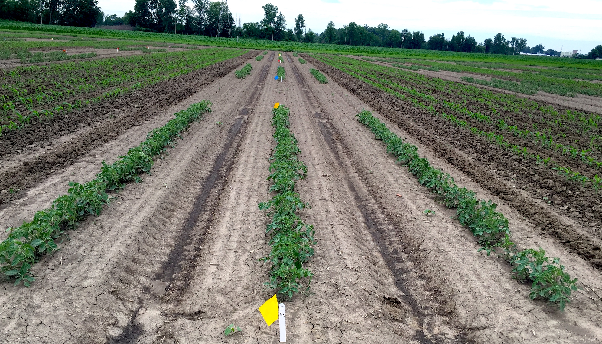
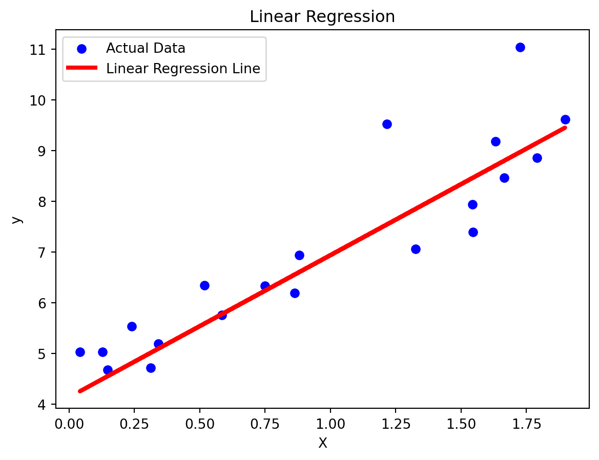
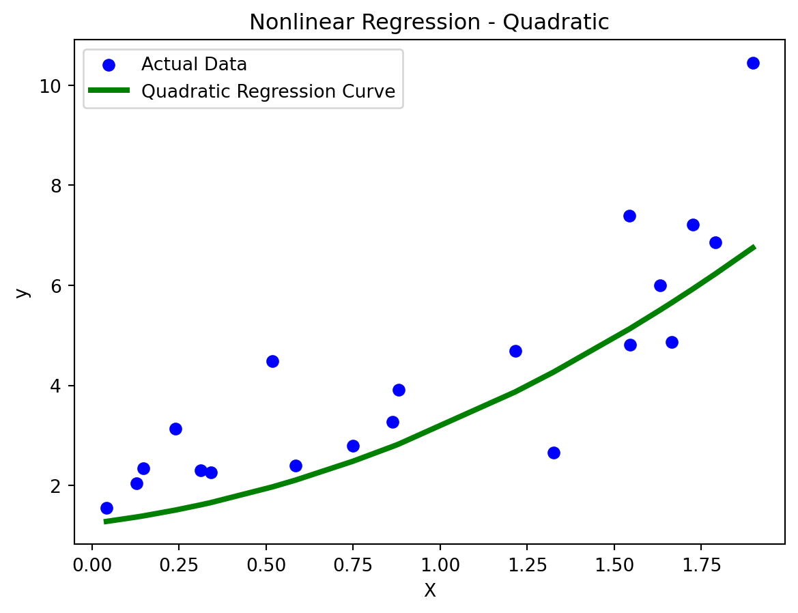
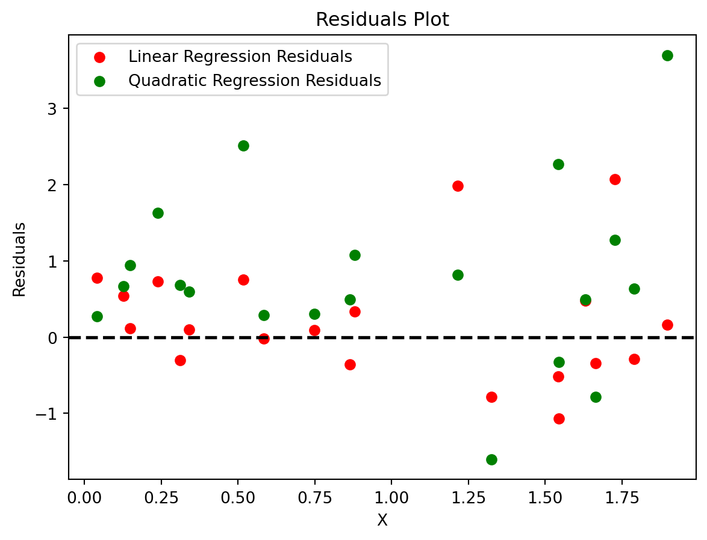
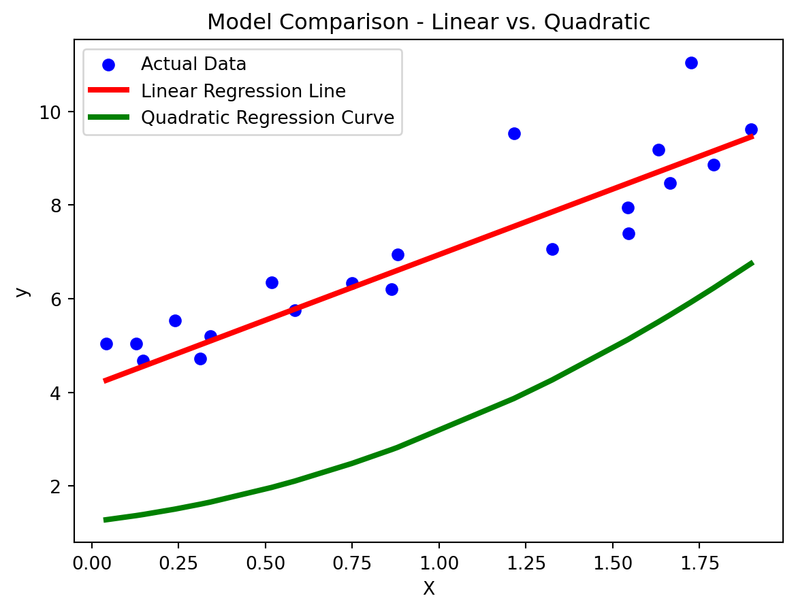

# Importing necessary libraries
import numpy as np
import matplotlib.pyplot as plt
from sklearn.linear_model import LinearRegression
from sklearn.model_selection import train_test_split
# Generating synthetic data
np.random.seed(42)
X = 2 * np.random.rand(100, 1)
y = 4 + 3 * X + np.random.randn(100, 1)
# Splitting the data into training and testing sets
X_train, X_test, y_train, y_test = train_test_split(X, y, test_size=0.2, random_state=42)
# Creating and training the linear regression model
lin_reg = LinearRegression()
lin_reg.fit(X_train, y_train)
# Making predictions on the test set
y_pred = lin_reg.predict(X_test)Understanding Linear and Nonlinear Regression: A Machine Learning Perspective
Introduction
Regression analysis is a fundamental technique in machine learning that aims to model the relationship between a dependent variable and one or more independent variables. Linear and nonlinear regression are two common approaches used to capture and predict these relationships. In this blog post, we will delve into the concepts of linear and nonlinear regression, provide code examples using a popular machine learning library, and present insightful data visualizations to enhance our understanding.

Linear Regression
What is Linear Regression?
Linear regression is a linear approach to modeling the relationship between a dependent variable (yy) and one or more independent variables (XX). The model assumes that the relationship can be represented by a linear equation:
y=β0+β1X1+β2X2+…+βnXn+ϵy=β0+β1X1+β2X2+…+βnXn+ϵ
Here, β0β0 is the intercept, β1,β2,…,βnβ1,β2,…,βn are the coefficients, X1,X2,…,XnX1,X2,…,Xn are the independent variables, and ϵϵ is the error term.
Linear Regression in Python
Let’s implement a simple linear regression model using the popular scikit-learn library. We’ll use the following code:
Visualization 1: Scatter Plot with Regression Line
Now, let’s visualize the results by plotting a scatter plot of the data points along with the linear regression line:
# Plotting the scatter plot
plt.scatter(X_test, y_test, color='blue', label='Actual Data')
# Plotting the regression line
plt.plot(X_test, y_pred, color='red', linewidth=3, label='Linear Regression Line')
# Adding labels and legend
plt.xlabel('X')
plt.ylabel('y')
plt.title('Linear Regression')
plt.legend()
# Displaying the plot
plt.show()
This graph displays the actual data points in blue and the linear regression line in red, demonstrating how well the model fits the data.
Nonlinear Regression
What is Nonlinear Regression?
While linear regression assumes a linear relationship, nonlinear regression allows for more complex, nonlinear relationships between the dependent and independent variables. The model can take various forms, such as quadratic, exponential, or logarithmic functions.
Nonlinear Regression in Python
Let’s consider a scenario where the relationship between XX and yy is quadratic. We can use scikit-learn’s PolynomialFeatures to transform the features and apply linear regression:
from sklearn.preprocessing import PolynomialFeatures
# Generating synthetic data with a quadratic relationship
y_nonlinear = 1 + 2 * X + 0.5 * X**2 + np.random.randn(100, 1)
# Transforming features to include quadratic term
poly_features = PolynomialFeatures(degree=2, include_bias=False)
X_poly = poly_features.fit_transform(X)
# Splitting the data into training and testing sets
X_poly_train, X_poly_test, y_poly_train, y_poly_test = train_test_split(X_poly, y_nonlinear, test_size=0.2, random_state=42)
# Creating and training the linear regression model with quadratic features
lin_reg_nonlinear = LinearRegression()
lin_reg_nonlinear.fit(X_poly_train, y_poly_train)
# Making predictions on the test set
y_poly_pred = lin_reg_nonlinear.predict(X_poly_test)Visualization 2: Scatter Plot with Quadratic Regression Curve
Now, let’s visualize the results with a scatter plot and a quadratic regression curve:
# Sorting X_test for better visualization
X_test_sorted, y_poly_pred_sorted = zip(*sorted(zip(X_test, y_poly_pred)))
# Plotting the scatter plot
plt.scatter(X_test, y_poly_test, color='blue', label='Actual Data')
# Plotting the quadratic regression curve
plt.plot(X_test_sorted, y_poly_pred_sorted, color='green', linewidth=3, label='Quadratic Regression Curve')
# Adding labels and legend
plt.xlabel('X')
plt.ylabel('y')
plt.title('Nonlinear Regression - Quadratic')
plt.legend()
# Displaying the plot
plt.show()
This graph showcases the actual data points in blue and the quadratic regression curve in green.
Visualization 3: Residuals Plot
Another insightful visualization is the residuals plot, which helps assess the performance of the model. Residuals are the differences between the actual and predicted values.
python# Calculating residuals for linear regression
residuals_linear = y_test - y_pred
# Calculating residuals for quadratic regression
residuals_nonlinear = y_poly_test - y_poly_pred
# Plotting residuals for linear regression
plt.scatter(X_test, residuals_linear, color='red', label='Linear Regression Residuals')
# Plotting residuals for quadratic regression
plt.scatter(X_test, residuals_nonlinear, color='green', label='Quadratic Regression Residuals')
# Adding a horizontal line at y=0
plt.axhline(y=0, color='black', linestyle='--', linewidth=2)
# Adding labels and legend
plt.xlabel('X')
plt.ylabel('Residuals')
plt.title('Residuals Plot')
plt.legend()
# Displaying the plot
plt.show()
This graph illustrates the residuals for both linear and quadratic regression models. Ideally, residuals should be randomly distributed around the horizontal line at y=0y=0.
Visualization 4: Model Comparison
Let’s create a plot to compare the predictions of the linear and quadratic regression models:
# Sorting X_test for better visualization
X_test_sorted, y_pred_sorted = zip(*sorted(zip(X_test, y_pred)))
# Plotting the scatter plot
plt.scatter(X_test, y_test, color='blue', label='Actual Data')
# Plotting the linear regression line
plt.plot(X_test_sorted, y_pred_sorted, color='red', linewidth=3, label='Linear Regression Line')
# Sorting X_test for quadratic regression
X_test_sorted, y_poly_pred_sorted = zip(*sorted(zip(X_test, y_poly_pred)))
# Plotting the quadratic regression curve
plt.plot(X_test_sorted, y_poly_pred_sorted, color='green', linewidth=3, label='Quadratic Regression Curve')
# Adding labels and legend
plt.xlabel('X')
plt.ylabel('y')
plt.title('Model Comparison - Linear vs. Quadratic')
plt.legend()
# Displaying the plot
plt.show()
This graph provides a side-by-side comparison of the linear regression line and the quadratic regression curve.
Conclusion
Linear and nonlinear regression are powerful tools in machine learning for modeling relationships between variables. By understanding these concepts and visualizing the results, we can gain valuable insights into the data and the performance of our models. The code examples and visualizations presented in this blog post serve as a starting point for exploring and implementing regression analysis in your machine learning projects.